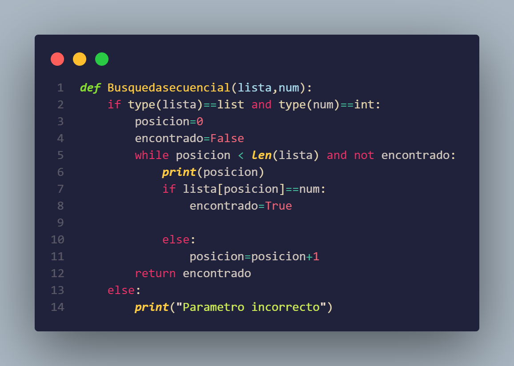

Búsqueda Secuencial
Acerca de:
La búsqueda secuencial, también conocida como búsqueda lineal, es un algoritmo simple utilizado para encontrar un elemento específico en una lista. Consiste en recorrer secuencialmente cada elemento de la lista hasta encontrar el elemento buscado o hasta recorrer toda la lista sin éxito. Es el método de búsqueda más básico y se puede aplicar tanto en listas ordenadas como no ordenadas.
Complejidad:
La complejidad temporal de la búsqueda secuencial es de O(n), donde "n" es el número de elementos en la lista. En el peor caso, la búsqueda requiere recorrer toda la lista para determinar si el elemento buscado está presente o no. Esto significa que la eficiencia de la búsqueda secuencial disminuye linealmente a medida que el tamaño de la lista aumenta. Es adecuada para listas pequeñas o cuando la lista no está ordenada, pero puede volverse ineficiente en listas grandes donde otros algoritmos de búsqueda más eficientes, como la búsqueda binaria, son más recomendables.
